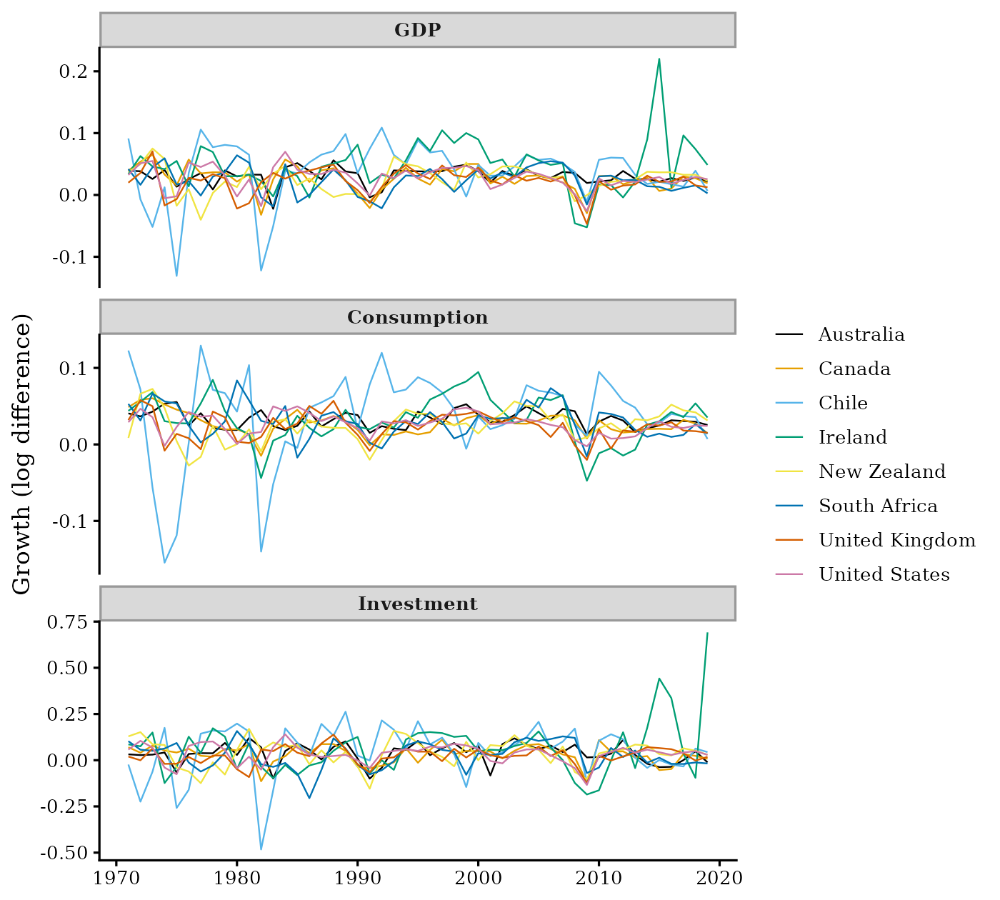
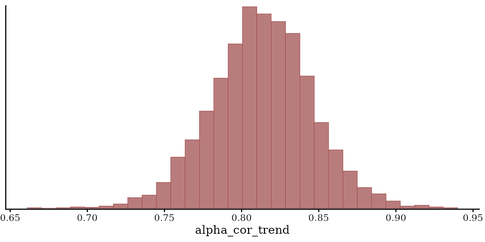
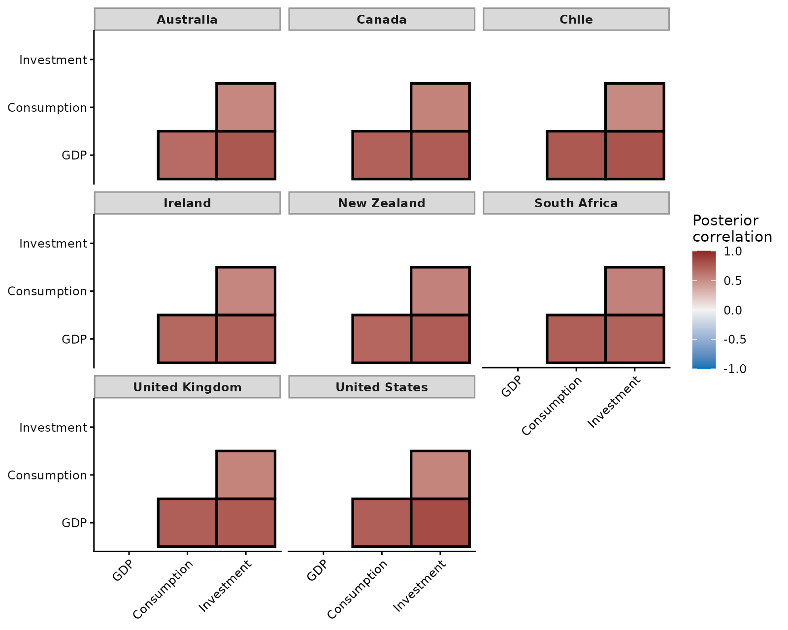
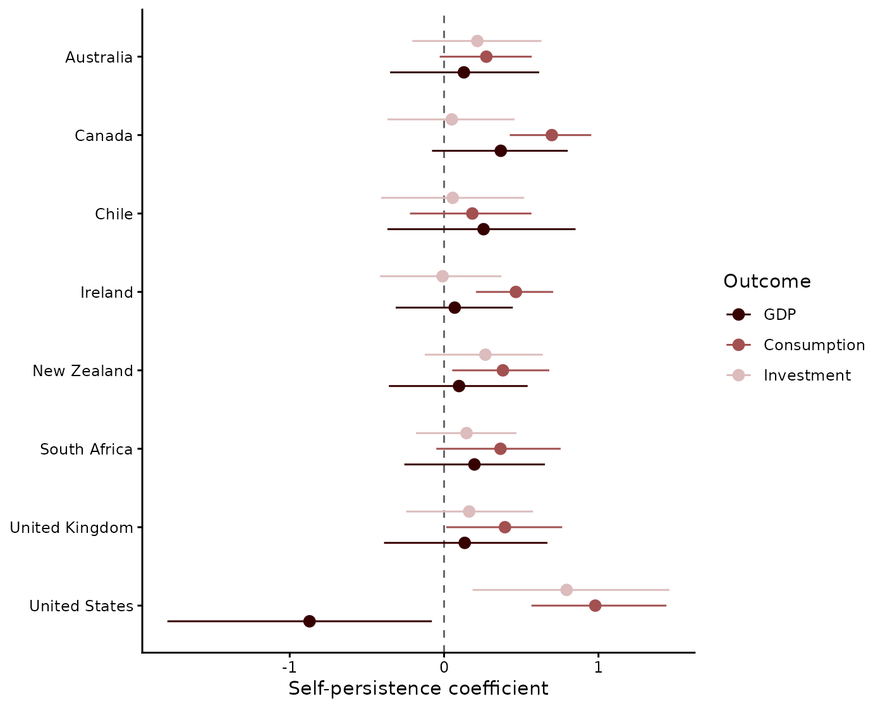
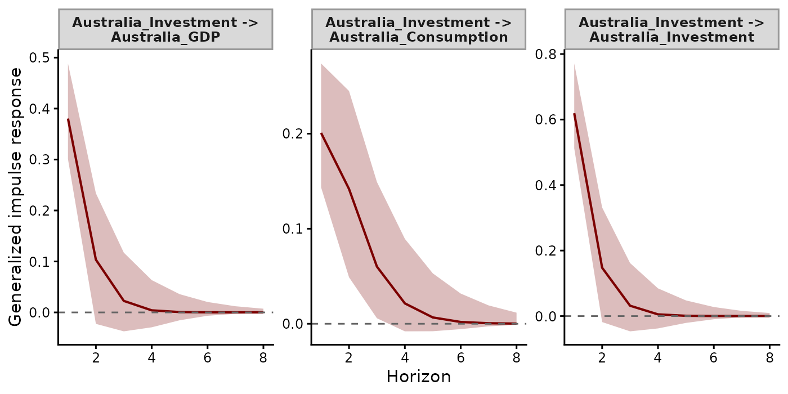
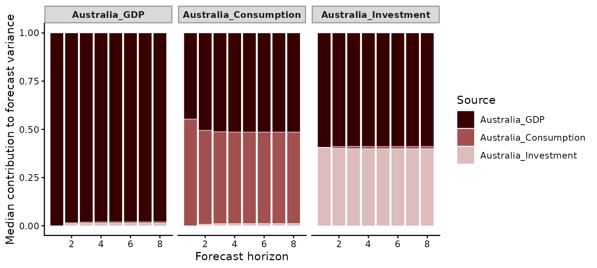
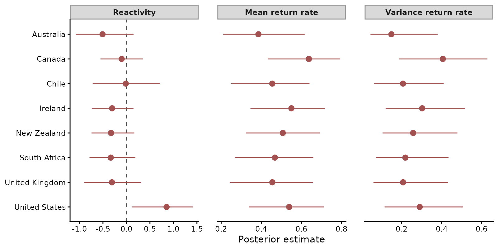

Hierarchical vector autoregressions with mvgam
Nicholas J Clark
2026-10-28
Source:vignettes/articles/hierarchical_var.Rmd
hierarchical_var.RmdEight economies, each observed for forty-nine years on the same three outcomes, could share one vector autoregression (VAR) or have one each. A single VAR for all eight ignores the differences between economies. Eight separate VARs ignore what the economies have in common. Forty-nine annual observations per economy also estimate a VAR poorly on their own. A hierarchical VAR gives each economy its own transition matrix and its own covariance of shocks. It draws both towards a mean shared by all eight. The data decide how strongly (Gelman and Hill 2007).
Savage (2016) fitted such a model in Stan to growth in output, consumption and investment for eight economies. This article fits it in mvgam to the same eight economies over 1970 to 2019. It compares the pooling with Savage’s estimates, then works through what each economy’s VAR offers: its transition matrix, the correlation of its shocks, impulse responses, variance decompositions and stability metrics.
The data
The World Development Indicators (World Bank 2024) record annual GDP, final consumption and gross fixed capital formation in constant local currency. The WDI package (Arel-Bundock 2013) downloads them for the economies Savage used: Australia, Canada, Chile, Ireland, New Zealand, South Africa, the United Kingdom and the United States.
raw <- WDI::WDI(
country = c("AU", "CA", "CL", "IE", "NZ", "ZA", "GB", "US"),
indicator = c(gdp = "NY.GDP.MKTP.KN", cons = "NE.CON.TOTL.KN",
gfcf = "NE.GDI.FTOT.KN"),
start = 1970, end = 2019
)The panel ends in 2019. The contractions and rebounds of the pandemic years would dominate every estimate. Growth is the difference in log levels from one year to the next, which leaves 49 years for each economy:
raw <- raw[order(raw$country, raw$year), ]
outcomes <- c(gdp = "GDP", cons = "Consumption", gfcf = "Investment")
growth <- do.call(rbind, lapply(split(raw, raw$country), function(d) {
do.call(rbind, lapply(names(outcomes), function(v) {
data.frame(country = d$country[-1], year = d$year[-1],
outcome = outcomes[[v]], growth = diff(log(d[[v]])))
}))
}))
growth$country <- factor(growth$country)
growth$outcome <- factor(growth$outcome, levels = outcomes)
growth$time <- growth$year - min(growth$year) + 1
rownames(growth) <- NULL
ggplot(growth, aes(year, growth, colour = country)) +
geom_line(linewidth = 0.4) +
scale_colour_manual(values = palette.colors(8, "Okabe-Ito")) +
facet_wrap(~ outcome, ncol = 1, scales = "free_y") +
labs(x = NULL, y = "Growth (log difference)", colour = NULL)
Annual growth in real GDP, consumption and investment for the eight economies, 1971 to 2019, as the difference in log levels.
Investment growth varies about 3 times as much as GDP growth. GDP fell in 2009 in 7 of the eight economies. The largest rises in the panel are Ireland’s GDP growth of 25% in 2015 and Ireland’s investment growth of 100% in 2019.
Because the three outcomes differ in scale, one prior on the coefficients would mean different things for each. Dividing each outcome by its standard deviation over the whole panel puts them on one scale, where a single prior means the same for all three. The economies keep their own volatility. Chile and Ireland remain the most variable of the eight.
growth$y <- growth$growth / ave(growth$growth, growth$outcome, FUN = sd)
growth$y <- growth$y - ave(growth$y, growth$country, growth$outcome)
head(growth)
#> country year outcome growth time y
#> 1 Australia 1971 GDP 0.03923020 1 0.2977653
#> 2 Australia 1972 GDP 0.03832588 2 0.2669298
#> 3 Australia 1973 GDP 0.02584849 3 -0.1585234
#> 4 Australia 1974 GDP 0.04024529 4 0.3323780
#> 5 Australia 1975 GDP 0.01329819 5 -0.5864627
#> 6 Australia 1976 GDP 0.02554905 6 -0.1687338The second line subtracts each series’ mean. Because an intercept for each series and that series’ latent states describe the same level, estimating both leaves the pair poorly identified. The subtracted means take the place of the intercepts Savage estimated for each economy and outcome.
The model
The model has two layers. The observation layer says that each standardised growth rate \(y_{c,o,t}\), for economy \(c\), outcome \(o\) and year \(t\), measures a latent state \(z_{c,o,t}\) with observation error:
\[ y_{c,o,t} \sim \mathrm{Normal}(z_{c,o,t},\ \sigma). \]
The three states of each economy follow a VAR of their own:
\[ \mathbf{z}_{c,t} \sim \mathrm{MVN}(A_c\,\mathbf{z}_{c,t-1},\ \Sigma_c), \qquad \Sigma_c = \mathrm{diag}(\boldsymbol{\tau}_c)\,\Omega_c\, \mathrm{diag}(\boldsymbol{\tau}_c). \]
\(A_c\) holds the lagged effects among economy \(c\)’s outcomes. \(\boldsymbol{\tau}_c\) holds the standard deviations of its shocks and \(\Omega_c\) their correlations. The economies do not interact: a shock in Chile moves only Chile’s states.
The pooling acts on both \(A_c\) and \(\Omega_c\). mvgam keeps every \(A_c\) stationary through the prior of Heaps (2023), under which each \(A_c\) is a transformation of an unconstrained matrix. The diagonal elements of the eight unconstrained matrices share one normal prior. Their off-diagonal elements share another. mvgam estimates the means and precisions of both priors. The correlation of each economy’s shocks mixes a correlation shared by all eight with a deviation of its own:
\[ \Omega_c = \alpha\,\Omega + (1 - \alpha)\,\tilde\Omega_c . \]
With \(\alpha\) near one, every economy’s shocks correlate as \(\Omega\) says. With \(\alpha\) near zero, each economy’s correlation is its own. Ben Goodrich proposed this mixture in the discussion of Savage’s post. We kept the priors given there. The global correlation keeps mvgam’s default LKJ(1) prior, which is uniform over correlation matrices. Each deviation \(\tilde\Omega_c\) has an LKJ(10) prior, which holds it near the identity (Lewandowski et al. 2009). \(\alpha\) has a Beta(2, 2) prior.
Savage fitted the VAR to the observed growth rates. Because statistical agencies revise national accounts after their first release, a published growth rate measures the economy with error of its own. The state-space layer keeps that measurement error apart from the economies’ shocks (Auger-Méthé et al. 2021). Forty-nine years of data separate the two variances poorly. The inverse gamma prior on \(\sigma\) supplies the missing information, placing observation error near 0.16 of a standard deviation of growth.
In mvgam, VAR() takes the grouping through two
arguments. gr names the factor whose levels each get a VAR,
here the economies. subgr names the factor whose levels are
the states within each group, here the outcomes. cor = TRUE
estimates the correlations of the shocks:
fit <- mvgam(
formula = y ~ -1,
trend_formula = ~ VAR(p = 1, gr = country, subgr = outcome, cor = TRUE),
family = gaussian(),
data = growth,
priors = c(
prior(inv_gamma(20, 3), class = sigma),
prior(lkj_corr_cholesky(10), class = L_deviation_group_trend),
prior(beta(2, 2), class = alpha_cor_trend)
),
chains = 4,
iter = 2000,
warmup = 1000,
control = list(adapt_delta = 0.95),
seed = 2016,
silent = 2
)The observation formula y ~ -1 adds nothing to the
latent states. mvgam names each of the 24 series by joining its economy
and outcome, as in Australia_GDP.
How strongly the economies pool
alpha_cor_trend is the weight \(\alpha\) on the shared correlation:
mcmc_plot(fit, variable = "alpha_cor_trend", type = "hist")
Posterior distribution of the weight on the shared correlation of the shocks.
The weight is 0.81 [0.75, 0.88]. Savage estimated 0.82 [0.75, 0.90] from 313 annual observations of an earlier vintage of the same indicators.
residual_cor() summarises the shared correlation \(\Omega\).
covariance = "innovation" asks for the correlation of the
shocks themselves. The default, "stationary", passes them
through each economy’s transition matrix:
rc <- residual_cor(fit, covariance = "innovation")
summary(rc)
#> # A tibble: 3 × 11
#> series_1 series_2 Estimate Est.Error Q_lower Q_upper ESS prob_positive
#> <chr> <chr> <dbl> <dbl> <dbl> <dbl> <dbl> <dbl>
#> 1 GDP Investment 0.923 0.186 0.855 0.965 2423. 1
#> 2 GDP Consumption 0.875 0.142 0.800 0.931 2419. 1
#> 3 Consumption Investment 0.669 0.0996 0.557 0.771 2671. 1
#> # ℹ 3 more variables: prob_negative <dbl>, prob_nonzero <dbl>, sig <lgl>GDP shocks correlate with investment shocks at 0.92 [0.86, 0.96] and with consumption shocks at 0.88 [0.80, 0.93]. Consumption and investment shocks correlate at 0.67 [0.56, 0.77]. Savage’s estimates were 0.93, 0.89 and 0.74, in the same order.
by_group = TRUE returns the correlation of each
economy’s shocks:
rc_groups <- residual_cor(fit, covariance = "innovation", by_group = TRUE)
plot(rc_groups, include_global = FALSE)
Posterior mean correlations of the shocks in each economy. Outlined pairs have 95% credible intervals that exclude zero.
The economies’ GDP and investment shocks correlate at 0.71 to 0.83, against the shared 0.92. Every economy’s correlation is below the shared one. Forty-nine years of shocks move each deviation little from the identity its LKJ(10) prior favours. The fifth of each economy’s correlation that the deviation contributes pulls that correlation towards zero.
Transition matrices
posterior_transition_matrix() with
groups = "all" returns each economy’s \(A_c\). Its diagonal holds the persistence
of each outcome from one year to the next:
A_all <- posterior_transition_matrix(fit, groups = "all")
plot(A_all, type = "diagonal")
Posterior means and 95% credible intervals of the diagonal of each economy’s transition matrix.
Without groups,
posterior_transition_matrix() averages the eight matrices
in each posterior draw:
A
#> Lag-1 VAR transition matrix from an mvgam fit
#> Group : mean over groups
#> Dimension : 3 x 3
#> Mean |A_ij| (i != j): 0.12
#> Point estimate:
#> GDP Consumption Investment
#> GDP 0.05 0.27 0.12
#> Consumption 0.04 0.47 0.02
#> Investment 0.09 0.14 0.21
#> 95% CI on each cell available in `A_lower` / `A_upper`.On average, consumption growth is the most persistent of the three outcomes. The average diagonal coefficient is 0.47 [0.34, 0.61] for consumption and 0.05 [-0.15, 0.25] for GDP.
Consider the United States. Its GDP diagonal is -0.87 [-1.79, -0.08] and its GDP growth loads on last year’s consumption growth at 1.06 [0.48, 1.77]. In the United States, the states of GDP and consumption correlate at 0.82, the most strongly of the eight. Last year’s GDP and consumption then carry nearly the same information about this year. The model can trade a negative coefficient on one against a positive coefficient on the other. The wide intervals record that trade-off.
Impulse responses
An impulse response gives the expected path of every state after a
single shock to one of them (Lütkepohl 2005).
irf() computes the generalised impulse response by default
(Pesaran and Shin 1998). A shock
to one outcome brings with it the shocks its correlated outcomes receive
in the same year. Horizon 1 is the year of the shock.
irfs <- irf(fit, h = 8)plot() selects the shock and the responses among the 24
states by name. Here we draw the responses of the three Australian
states to a shock in Australian investment:
aus <- c("Australia_GDP", "Australia_Consumption", "Australia_Investment")
plot(irfs, series = "Australia_Investment", responses = aus)
Generalised impulse responses of Australian GDP, consumption and investment to a one standard deviation shock in Australian investment, with 95% credible intervals.
The shock raises Australian investment by 0.62 [0.51, 0.77] standard deviations in its first year. Because investment and GDP shocks correlate, GDP moves with it, by 0.38 [0.30, 0.49]. In the second year consumption is at 0.14 [0.05, 0.24]. Every response stays within 0.01 of zero from year 5.
Variance decompositions
A forecast error variance decomposition (FEVD) splits the variance of
each state’s forecast among the states whose shocks generate it, at each
horizon. fevd() splits the variance with the Cholesky
factor of each economy’s \(\Sigma_c\),
taken in the order of the levels of outcome. Where two
outcomes’ shocks correlate, the factor assigns the shared part to the
outcome that comes first, here GDP.

Median share of the forecast error variance of each Australian outcome that each Australian source of shocks generates, by forecast horizon.
In the first year, GDP shocks generate 59% of the forecast variance
of Australian investment. That share is the part of two correlated
shocks the ordering assigns to GDP. The shares barely move with the
horizon. At eight years GDP shocks generate 97% of the forecast variance
of GDP itself and 51% of that of consumption. Reordering the levels of
outcome and refitting would move the shared part of each
correlated pair to the other outcome. The generalised impulse responses
above are the same in any order.
Stability of each economy
stability() summarises each economy’s \(A_c\) as the stability metrics of Ives et
al. (2003).
Reactivity is the log of the largest singular value of \(A_c\). Above zero, some perturbation grows
in the year after it occurs before the economy returns towards its means
(Neubert et al. 2009).
The mean return rate is the largest modulus of the eigenvalues of \(A_c\). Once the slowest mode dominates, a
deviation shrinks by about this factor each year. The variance return
rate is its square. On a hierarchical fit, stability()
reports these three metrics for every economy:

Posterior medians and 95% credible intervals of reactivity and of the mean and variance return rates of each economy. The dashed line marks zero reactivity.
The median mean return rates run from 0.39 to 0.64. A deviation of growth from its mean halves within two years in every economy. Reactivity intervals lie above zero for United States. The United States has a reactivity of 0.85 [0.11, 1.41], shaped by the large offsetting coefficients of its transition matrix.
Partial pooling puts four fifths of the weight on a correlation of shocks shared by all eight economies, close to Savage’s estimate from an earlier vintage of the same data. Each economy keeps a transition matrix of its own. Its coefficients are least certain where two states move together, as the GDP and consumption states of the United States do. Forty-nine annual observations are few for a VAR of three states. The shared means make eight of them estimable at once.
Where to next
Each function used here has a help page, such as
?stability or ?residual_cor, with its
arguments and output. how_to_cite() writes a methods
paragraph for a fitted model, with its references.
Related articles:
- State-space VARs fit one VAR to five plankton taxa, with covariates on the latent means and forecasts for a held-out year.
- Dynamic factor models describe many series with fewer latent processes than series.
- Forecast evaluation covers scoring rules and leave-future-out cross-validation.
- mvgam overview introduces the observation and trend formulas.
-
Formatting
data covers the long data format and
mvgam_data().
References
Arel-Bundock V (2013). WDI: World Development Indicators and other World Bank data. The R Journal 5(2), 190-192. doi:10.32614/RJ-2013-023
Auger-Méthé M, Newman K, Cole D, Empacher F, Gryba R, King AA, Leos-Barajas V, Mills Flemming J, Nielsen A, Petris G and Thomas L (2021). A guide to state-space modeling of ecological time series. Ecological Monographs 91(4), e01470. doi:10.1002/ecm.1470
Gelman A and Hill J (2007). Data Analysis Using Regression and Multilevel/Hierarchical Models. Cambridge University Press. doi:10.1017/CBO9780511790942
Heaps SE (2023). Enforcing stationarity through the prior in vector autoregressions. Journal of Computational and Graphical Statistics 32(1), 74-83. doi:10.1080/10618600.2022.2079648
Ives AR, Dennis B, Cottingham KL and Carpenter SR (2003). Estimating community stability and ecological interactions from time-series data. Ecological Monographs 73(2), 301-330. doi:10.1890/0012-9615(2003)073[0301:ECSAEI]2.0.CO;2
Lewandowski D, Kurowicka D and Joe H (2009). Generating random correlation matrices based on vines and extended onion method. Journal of Multivariate Analysis 100(9), 1989-2001. doi:10.1016/j.jmva.2009.04.008
Lütkepohl H (2005). New Introduction to Multiple Time Series Analysis. Springer, Berlin. doi:10.1007/978-3-540-27752-1
Neubert MG, Caswell H and Solow AR (2009). Detecting reactivity. Ecology 90(10), 2683-2688. doi:10.1890/08-2014.1
Pesaran HH and Shin Y (1998). Generalized impulse response analysis in linear multivariate models. Economics Letters 58(1), 17-29. doi:10.1016/S0165-1765(97)00214-0
Savage J (2016). Hierarchical Vector Autoregression. RPubs. https://rpubs.com/jimsavage/hierarchical_var
World Bank (2024). World Development Indicators. World Bank Group. https://data.worldbank.org/